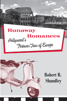

How Hollywood's European travelogues chronicled Americans' self-discovery
How Hollywood's European travelogues chronicled Americans' self-discovery


 How Hollywood's European travelogues chronicled Americans' self-discovery
How Hollywood's European travelogues chronicled Americans' self-discovery

|  |
Runaway RomancesHollywood's Postwar Tour of EuropeRobert R. Shandleycloth EAN: 978-1-59213-945-3 (ISBN: 1-59213-945-0) |
"Shandley�s careful analysis is informed by a wealth of relevant historical and critical studies. Runaway Romances is both conceptually interesting and original and it is a meaningful scholarly addition to the field."
—Antje Ascheid, Associate Professor in the Department of Theatre and Film Studies at the University of Georgia, and author of Hitler�s Heroines: Stardom and Womanhood in Nazi Cinema (Temple)
Postwar America imagined itself young and in love in Europe. And Hollywood films of the era reflected this romantic allure. From a young and na�ve Audrey Hepburn falling in love with Gregory Peck in Roman Holiday to David Lean�s Summertime, featuring Katharine Hepburn�s sexual adventure in Venice, these glossy travelogue romances were shot on location, and established a new model for Hollywood filmmaking.
As Robert Shandley shows in Runaway Romances, these films were not only indicative of the ideology of the American-dominated postwar world order, but they also represented a shift in Hollywood production values. Eager to capture new audiences during a period of economic crisis, Hollywood�s European output utilized a variety of devices including location work and the widescreen process to enhance cinematic experience. The films—To Catch a Thief, Three Coins in the Fountain, Funny Face among them—enticed viewers to visit faraway places for romantic escapades. Films such as A Foreign Affair and I Was a Male War Bride considered what it means to have American troops living abroad. In the process, these travelogue romances captured American fantasies for a brief, but intense, period that ended as audiences grew tired of Old World splendors, and entered into a new era of sexual awakening.
Excerpt available at www.temple.edu/tempress
"Shandley persuasively shows that the �travelogue romance� genre has something to tell us about history, culture, and ideology as well as film aesthetics and economics. He weaves original research into a compelling narrative argument. This is an excellent book of cultural history and film history."
—Peter Lev, Professor in the Department of Electronic Media and Film at Towson University, and author of The Fifties: Transforming the Screen, 1950-1959
"In this pleasant monograph, Shandley examines Hollywood's 'European Travelogue romances, 1947-1964,' which he imagines to constitute a genre.... This is a book for those interested in specialized film and genre study."
—Choice
"Robert R. Shandley's intriguing new text Runaway Romances offers a fresh, in-depth analysis of a genre....[T]his seminal work [is] a must for film enthusiast[s] historians, and researchers."
—Film and History
"Shandley makes the case for what he calls runaway or travelog romances as a legitimate film genre.... In this well-researched book, he devotes chapters to the 'occupation romance' and the use of widescreen and also includes an extensive bibliography. A useful analysis."
—Library Journal
"[D]elightful and perceptive.... Shandley's solid grasp of the basics of filmmaking is apparent throughout, and he is a careful, credible, trustworthy reader of film narrative, often getting at meaning by looking at how films create and solve problems.... [T]his [is a] thoughtful and engaging book."
— American Studies
Preface
Introduction
1. Hollywood�s Move Abroad
2. How Rome Saved Hollywood
3. Foreign Affairs: Metaphors of Transatlantic Relations
4. Tourists with Big Cameras: Widescreen Runaways and Class Mobility
5. Marrying the Enemy: The Occupation Romance
6. The End of the European Romance
Notes
Filmography
Bibliography
Index
Photographs follow page 110
 | Robert R. Shandleyis Associate Professor of Film studies and German at Texas A&M University. He is the author of Rubble Films: German Cinema in the Shadow of the Third Reich (Temple) and editor of Unwilling Germans? The Goldhagen Debate. |
Cinema Studies
History
American Studies
© 2015 Temple University. All Rights Reserved. This page: http://www.temple.edu/tempress/titles/2003_reg.html.